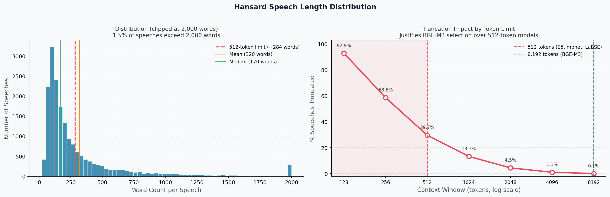
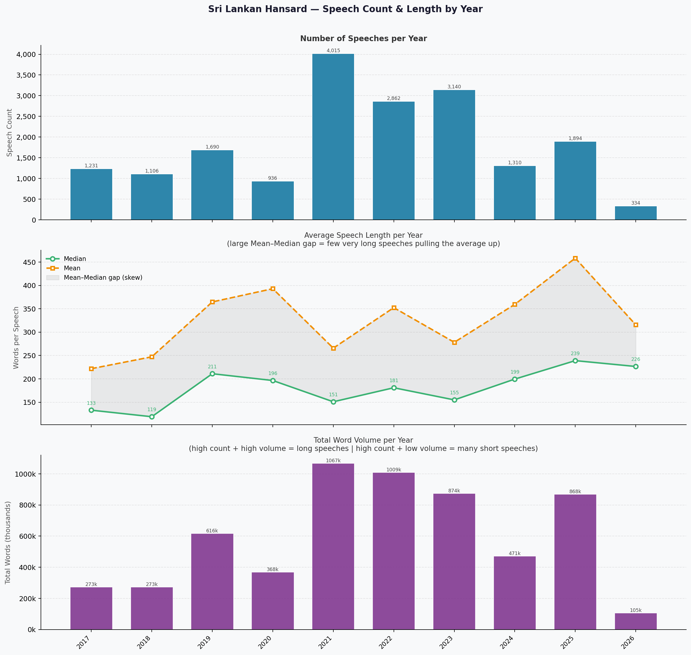
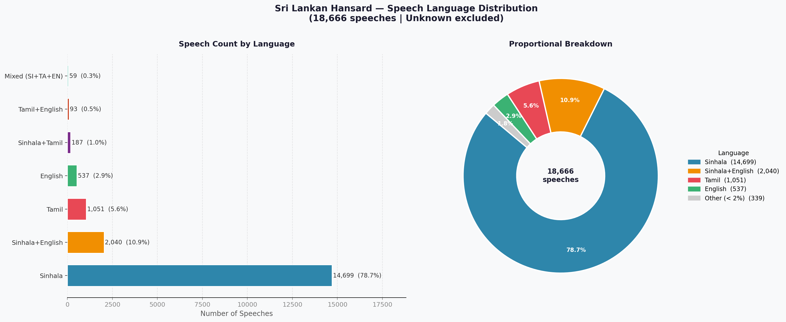
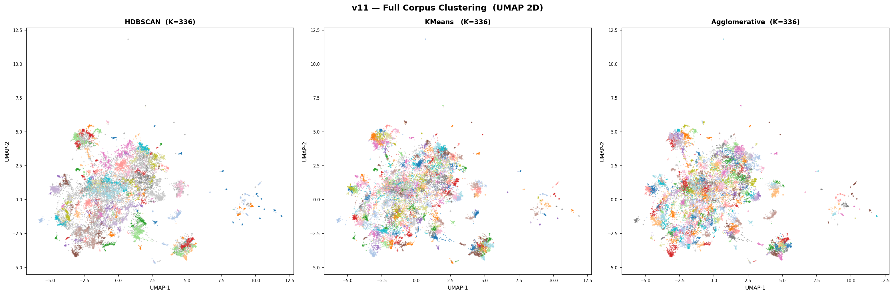
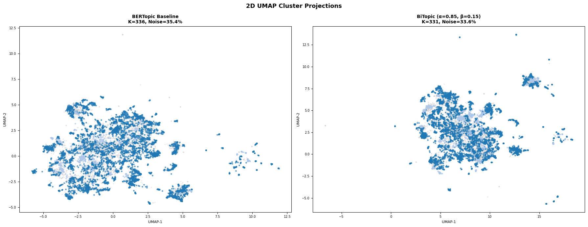
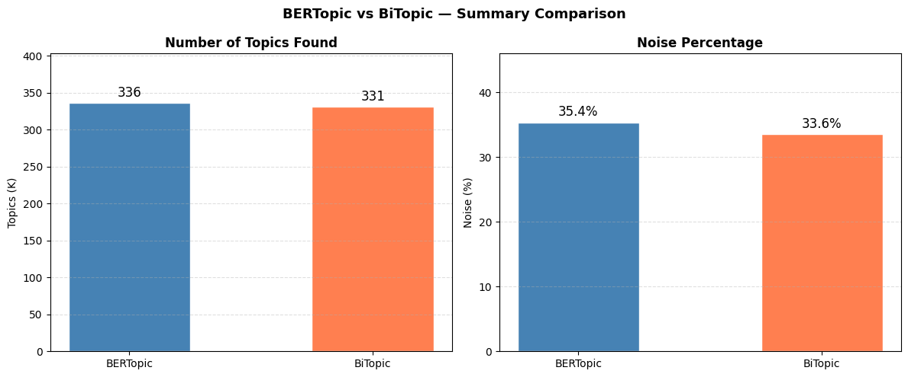
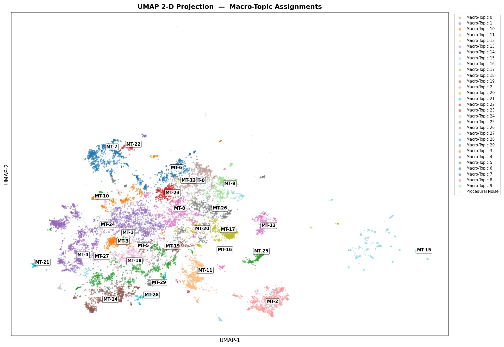

1 — Dataset Summary and Architecture
End-to-End NLP Pipeline
Flow chart is rendered dynamically from structured nodes and connections, so updates can be done by editing diagram data in code.
Dataset Collection Snapshot
| Item | Value | Notes |
|---|---|---|
| Source | Parliament Hansard PDFs | Official archive crawl by year/date. |
| Coverage | 2017-2026 | Includes major national crisis periods. |
| Languages | Sinhala, Tamil, English | Includes code-mixed segments. |
| Extraction | LLM-assisted (Gemini) | Used to reduce PDF/OCR layout failures. |
| Filtered out | Non-debate records | Question sessions and non-sitting docs removed. |



Speech-length and language-distribution visuals are shown directly after dataset details for quick corpus diagnostics.
Dataset covers 10 years of parliamentary debate; the pipeline transforms raw trilingual speeches into interpretable macro-topic structures.
LLM-assisted extraction improved multilingual readability and speaker-turn reconstruction compared with plain OCR parsing.
2 — Embedding Models: Scores and Tests
Table 1 — Embedding Benchmark Results (300 Hansard Speeches)
| Model | STS Mean ↑ | Retrieval MRR ↑ | P@5 ↑ | Anisotropy ↓ | Verdict |
|---|---|---|---|---|---|
| multilingual-e5-large-instruct | 0.827 | 0.810 | 0.56 | 0.909 | Collapsed |
| BAAI/bge-m3 | 0.523 | 0.516 | 0.68 | 0.552 | Selected |
| LaBSE | 0.487 | 0.324 | 0.72 | 0.492 | Healthy |
| paraphrase-multilingual-mpnet-base-v2 | 0.424 | 0.536 | 0.76 | 0.496 | Healthy |
Table 2 — Clustering-Based Embedding Evaluation (300 Hansard Speeches)
| Model | Dim | Time (s) | Topics | Outlier % | Silhouette | Davies-Bouldin ↓ | Coherence cv |
|---|---|---|---|---|---|---|---|
| LaBSE | 768 | 268 | 3 | 0.28 | 0.90 | 3.10 | 0.46 |
| mpnet-base-v2 | 768 | 171 | 16 | 18.97 | 0.79 | 3.09 | 0.25 |
| BAAI/bge-m3 | 1024 | 1449 | 89 | 27.57 | 0.81 | 2.48 | 0.38 |
| multilingual-e5-large | 1024 | 2334 | 70 | 38.63 | 0.71 | 3.03 | 0.04 |
Benchmark: STS / MRR / P@5
Clustering: Topics vs Outlier %
Quality: Silhouette / DB / Coherence
Embedding tests now include the exact benchmark and clustering-evaluation tables for 300 Hansard speeches.
3 — UMAP Visualization with Research Data
UMAP Reduction Quality Profile
Graph-based view of manifold quality after projecting BGE-M3 embeddings from 1024D to 5D.
UMAP Configuration Used for Clustering
| Parameter | Value | Purpose |
|---|---|---|
| Input embedding dimension | 1024 | BGE-M3 dense multilingual vectors. |
| n_neighbors | 15 | Balances local and global manifold structure. |
| n_components | 5 | Projects embeddings to clustering-ready space. |
| min_dist | 0.0 | Allows tighter local packing of semantically similar speeches. |
| distance metric | cosine | Captures semantic similarity in multilingual embedding space. |
| Output space | 1024D -> 5D | Used as direct input to clustering stage. |
UMAP was used strictly as a dimensionality-reduction stage before clustering, not as a standalone scoring chart.
Following BGE-M3 embedding generation, UMAP reduced the high-dimensional space to a 5D representation suitable for downstream clustering.
4 — Clustering Algorithms Comparison
Clustering Comparison (Test size: n=288, filtered from 300 speeches)
| Algorithm | K Found | Noise % | B-Cubed P | B-Cubed F1 | ARI | NMI | Silhouette |
|---|---|---|---|---|---|---|---|
| K-Means | 13 | 0.0 | 0.349 | 0.324 | 0.184 | 0.379 | 0.388 |
| Agglomerative (Ward) | 13 | 0.0 | 0.355 | 0.340 | 0.191 | 0.398 | 0.377 |
| HDBSCAN | 11 | 41.7 | 0.673 | 0.313 | 0.104 | 0.340 | 0.532 |
| OPTICS | 19 | 36.1 | 0.670 | 0.250 | 0.073 | 0.351 | 0.497 |
Precision vs Coverage Trade-Off Profile
Algorithms Cluster Visualization

Visual separation supports quantitative results: density-based clustering isolates compact high-purity groups.
Evaluation used the 300-speech ground-truth subset, filtered to 288 speeches after removing labels with fewer than five samples (13 categories retained).
K-Means and Agglomerative provide full coverage, while HDBSCAN yields the highest purity (B-Cubed P = 0.673) and best separation (Silhouette = 0.532) with 41.7% noise rejection.
5 — BiTopic Extension
BiTopic-1: Semantic-Lexical Fusion View

BiTopic-2: Topic Recovery and Interpretability

From the paper findings: BiTopic combines dense semantic embeddings with lexical grounding, improving topic interpretability and recovering speeches that pure embedding clustering tends to mark as noise.
6 — Macro Topic Assignment
Discovered Topics on Hansard Speeches
| Topic ID | Speeches | Interpreted Label | Key Terms |
|---|
Cluster Geometry Overview

Key terms combine high-frequency count terms and TF-IDF distinctive terms for each macro-topic assignment.
7 — Cluster Quality Analysis
Intra vs Inter Distance
Topic Purity by Macro Group
BiTopic Noise Recovery
Hybrid semantic-lexical BiTopic recovered part of the ambiguous speeches, improving interpretability beyond pure embedding clustering.